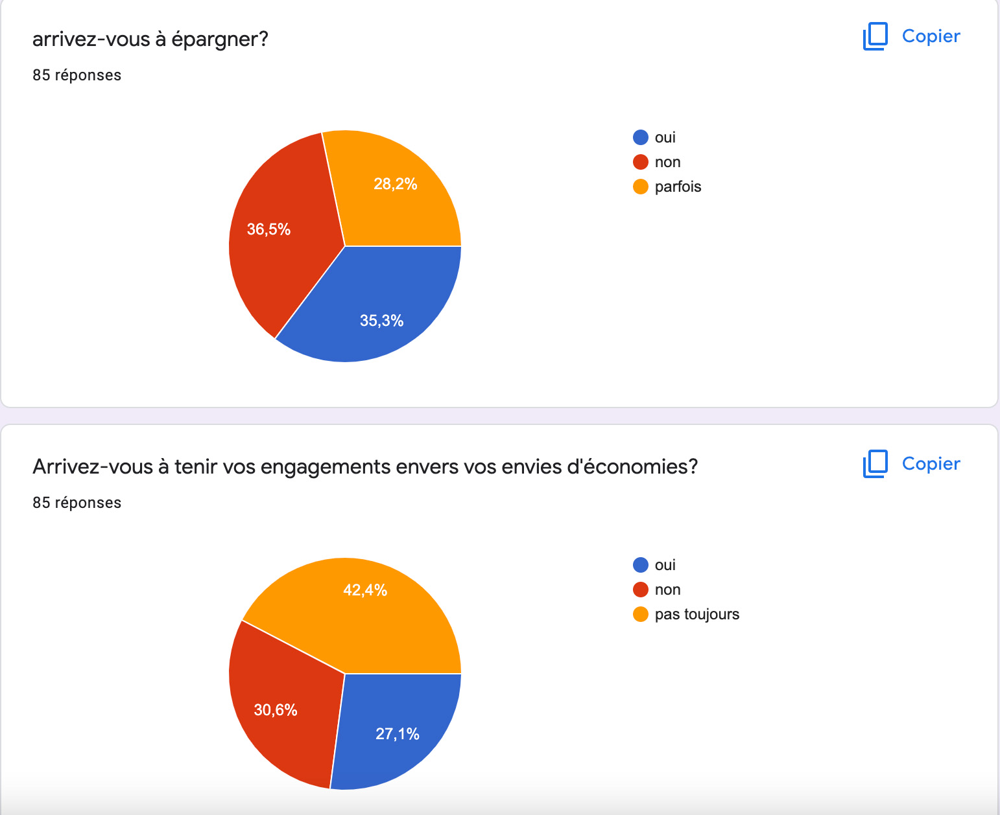
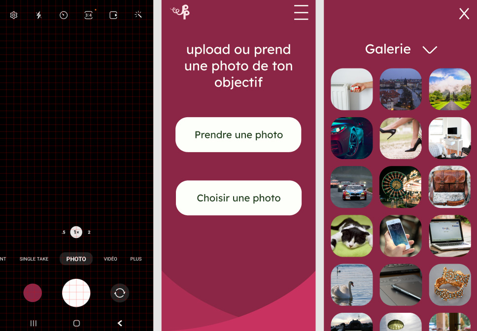
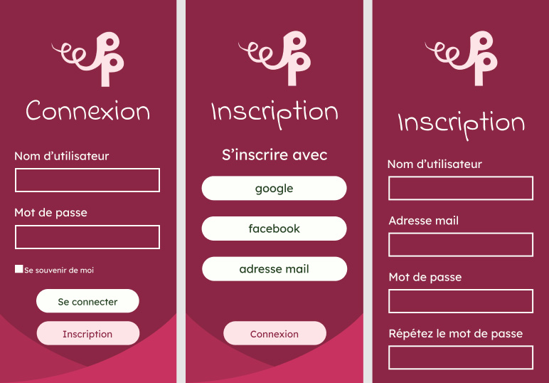
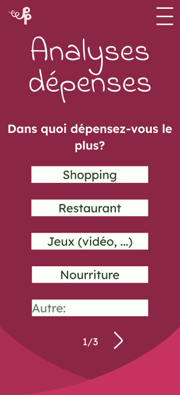
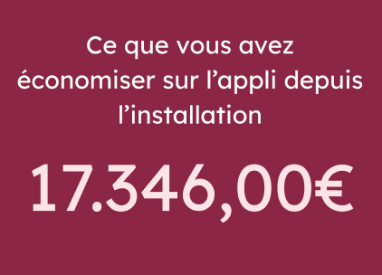

Casestudy Pig&Pay !

Le thème
J'ai commencé ce projet après avoir vu beaucoup de mon entourage avoir du mal à économiser et régulièrement regretter des achats alors qu'ils auraient finalement préféré acheter autre chose.
Formulaire et interviews
Après avoir trouvé mon idée, j’ai créé un formulaire. Il en est ressorti qu’un grand nombre de jeunes gagnant moins de 500 euros par mois n’arrive pas à économiser et donc à payer, acheter leurs objectifs. Le plus grand problème étant que si l’argent reste sur leur compte ils vont le dépenser.
Se différencier
En me lançant je me suis dis que je voulais partir dans une autre optique que les applications déjà existantes. Elles me semblent trop "comptables".
Inspiration
En me baladant sur tiktok j'ai découvert un système d' économie par enveloppe, c'est ce qui m'a inspiré cette appli. Le fait de faire une catégorie pour une dépense spécifique.
Repartir à zéro
J'ai d'abord réalisé des premiers visuels qui ne me plaisaient pas, j'ai donc recommencé en les rendant plus ressemblant à un jeu. J’ai également choisi de modifier les couleurs pour rendre le jeu plus “joyeux”.
Inspiration jeu
Pour que ça semble plus amusant, j'ai créé un profil où il est possible de choisir son avatar, sa couleur ou encore d upload une photo de son objectif d'épargne. Une fois les objectifs d'épargne remplis, j'ai choisi de les représenter sous forme de carte de jeu.
L’argent
Après avoir commencé à rendre l'appli un peu plus amusante, j'ai réfléchi à la manière dont l'argent pourrait être mis de côté pour éviter que les plus dépensiers ne craquent. Je me suis donc dis pourquoi utiliser l'appli comme un PayPal qui stockerait l'argent jusqu'à ce que l'objectif soit atteint et que donc la personne achète ce qu'elle voulait. Étant difficile à coder je me suis dis que ça resterait une chose à faire après que l'appli ait été mise en ligne.
Le nom
Pour le nom j'ai choisi de partir sur un quelque chose d’un peu rigolo, Pig&Pay. Pig pour le cochon qui est l’emblème de la tirelire d'économie et pay simplement pour acheter. Pour le logo je me suis dis que j'allais partir sur 2 p un peu comme PayPal mais en ajoutant une queue de cochon sur un des p et en partant sur une police plus rigolote.
La typographie
Pour la police je voulais partir sur une police de titre un peu rigolote et une une police neutre pour les textes pour que ça reste facilement lisible. Je suis donc partie pour les titres sur une typo manuscrite.
Le logo
Pour le logo je me suis inspirée de paypal en mettant les 2P pour Pig&Pay mais en y ajoutant une queu de cochon en référence à la tirelire de base.
Les couleurs
Les couleurs de base sont rose avec un peu de vert pour la couleur du cochon et le vert pour la couleur du dollar qui représente l’argent de façon universelle. J’ai choisi de laisser la possibilité aux utilisateurs de changer de couleurs selon leurs goûts en proposant au total 5 couleurs.
Tests utilisateurs
Il est ressorti de mes tests utilisateurs qu’il manquait des boutons pour pouvoir connecter son compte en banque, que le système d’upload de la photo pouvait être amélioré car il était trop grand et ne laissait pas la possibilité de prendre une photo en direct.
Il manquait aussi la possibilité de s’inscrire, il n’y avait que la connexion.
Il en est également ressorti qu’il serait chouette d’ajouter une petite analyse des dépenses via des questions pour pouvoir faire une page de conseil pour économiser.
Les noms de certains boutons ont également été changés car ils n’étaient pas très claire, par exemple un bouton “passer” est devenu continuer car il amenait à la page suivante.

Suite aux tests utilisateur la page profil a également changer, j’y ai ajouté des informations tels que le nombre d’objectifs déjà atteint, la somme totale épargnée pour la totalité des objectifs.
Mes choix
J’ai choisi de créer une page de conseils générale ainsi qu’une page de conseil personnalisé selon les réponses données lors de l’analyse des dépenses. Les utilisateurs auront donc accès à tous les conseils même ceux qui leur seront peut-être moins utiles.
Le temps
Parfois Pig&Pay c’est de savoir rendre le temps rentable en travaillant de n’importe où. De la salle d’attente du kiné à la caisse de mon student job, j’ai trouvé chaque minutes précieuses pour avancer sur le projet.